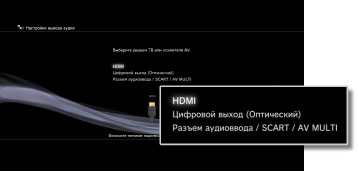
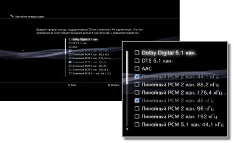
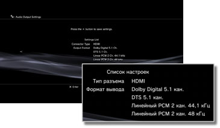

Настройки > Настройки звука > Настройки вывода аудио
Настройки вывода аудио
Выполнение настройки параметров вывода аудио системы. Эти параметры используются, в основном, когда система не подключена к аудиоустройствам, которые поддерживают цифровой аудиовыход, например усилителям AV (ресиверы) для домашнего использования.
1. |
Подтвердите форматы, поддерживаемые данным аудиоустройством. |
|||||||||||||||||||||||
|---|---|---|---|---|---|---|---|---|---|---|---|---|---|---|---|---|---|---|---|---|---|---|---|---|
2. |
Выберите |
|||||||||||||||||||||||
3. |
Выберите [Настройки вывода аудио]. |
|||||||||||||||||||||||
4. |
Выберите входной разъем на аудиоустройстве. Номера каналов и поддерживаемых аудиоформатов зависят от используемого разъема. 
|
|||||||||||||||||||||||
5. |
Выберите форматы аудиовыхода.  |
|||||||||||||||||||||||
6. |
Проверьте настройки.  |
|||||||||||||||||||||||
7. |
Сохраните настройки. |
|||||||||||||||||||||||

 , можно вернуться к предыдущему экрану и проверить настройки.
, можно вернуться к предыдущему экрану и проверить настройки.Подсказки
- По умолчанию аудиосигнал [Линейный PCM 2 кан.] выводится через все выходные разъемы. Если значения параметров аудиовыхода изменены пользователем, аудиосигнал выводится только через заданные разъемы.
- Если параметры вывода аудио изменены пользователем, в системе невозможен одновременный вывод аудиосигнала через несколько выходных разъемов. Например, если при подключении системы через кабель HDMI к телевизору и через цифровой оптический кабель к аудиоустройству в разделе [Настройки вывода аудио] соответствующее значение изменено на [Цифровой выход (Оптический)], аудиосигнал не выводится через телевизор. Для вывода аудиосигнала с телевизора измените значение на [HDMI] или выберите
 (Настройки) >
(Настройки) >  (Настройки звука) > [Многоканальный вывод аудио] и установите значение [Вкл.].
(Настройки звука) > [Многоканальный вывод аудио] и установите значение [Вкл.]. - Если на шаге 5 выбрано значение [Линейный PCM 2 кан. 88,2 кГц] или [Линейный PCM 2 кан. 176,4 кГц], на некоторых устройствах звук может не воспроизводиться или воспроизводиться с прерываниями.
- При использовании кабеля HDMI из программного обеспечения формата PlayStation®2 и PlayStation® выводится только аудиоканал [Линейный PCM 2 кан.]. Для получения аудиоканала Dolby Digital или DTS необходимо соединить систему PS3™ и аудиоустройство цифровым оптическим кабелем и изменить в меню [Настройки вывода аудио] значение на [Цифровой выход (оптический)].
- Если к системе через кабель HDMI подключено устройство, несовместимое со стандартом HDCP (защита цифровых данных при высокой пропускной способности), вывод видео- и/или аудиосигнала из системы невозможен.
Примечания
- В системе PS3™ некоторое программное обеспечение формата PlayStation®2 и PlayStation® может воспроизводиться не так, как в системах PlayStation®2 или PlayStation®, или вообще не работать.
- В некоторых системах PS3™ программное обеспечение формата PlayStation®2 не воспроизводится. Подробнее см. в разделе [Типы воспроизводимых дисков], на региональном веб-сайте SCE или в документации к системе PS3™.